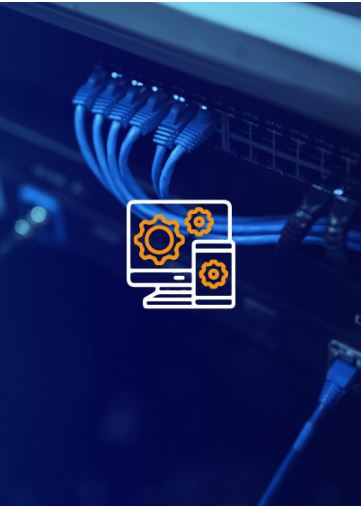
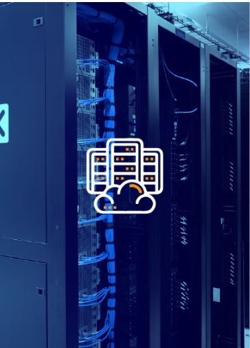

Linea de Negocio

Como primera línea de negocio, la Infraestructura y Plataformas le permite acceder física y lógicamente a los datos de la compañía.
Desarrollando soluciones que están diseñadas bajo estándares y normas internacionales, para ofrecer servicios de potencia, enfriamiento,
redes lógicas y eléctricas, seguridad física, equipos de cómputo y gestión.

El crecimiento constante y exponencial de la información en las compañías,
ha dado lugar a la reinvención de las estrategias de procesamiento, almacenamiento y protección de datos.
Nuestros servicios de Data Center le permiten a su organización contar con soluciones diseñadas a las necesidades de su core de negocio,
con grandes capacidades de adaptación, innovación y escalabilidad.
Agregar valor a los datos, se ha convertido en una necesidad empresarial; dando lugar al desafío de entender e identificar los patrones y tendencias del flujo de información
y su importancia en la toma de decisiones gerenciales.
La vertical de Datos y Analitica, le ofrece soluciones de última tecnología, que cuentan con la idoneidad técnica y capacidad estratégica para la transformación digital de su negocio.